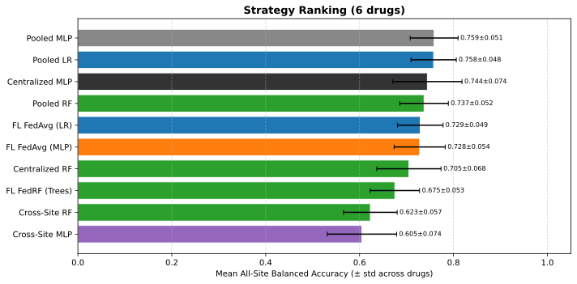
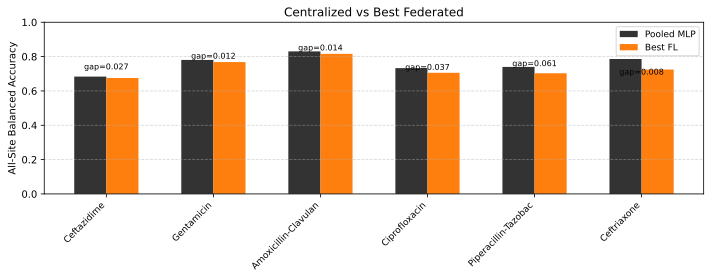

Aggregated Cross-Drug Analysis
The aggregated_analysis.ipynb notebook loads per-drug
final_results.csv files from all available drugs and produces
cross-drug comparisons, strategy rankings, and Federated learning
gap analyses. The masked_aggregated_analysis.ipynb variant does the
same for runs with Species masking enabled, adding mask-specific
delta charts.
Masked Aggregated Analysis
masked_aggregated_analysis.ipynb is a configurable variant that
loads per-drug runs filtered by MASK_STRATEGY (read from each run’s
best_params_used.txt). It produces the same visualisations as the
main notebook plus:
- Mask Delta Chart
Bar chart comparing BalAcc and AUC deltas (masked − unmasked) per drug. Positive deltas indicate species masking improved performance; negative deltas suggest the mask removed useful signal.
- Unmasked Reference
When unmasked runs are available, the notebook loads them in parallel as
df_final_unmaskedand includes them in comparison plots.
Results are saved to masked_aggregated_results/ instead of the
default aggregated_results/.
See Species Masking for mask computation and usage in per-drug notebooks.
Data Sources
08/Drugs/{drug}/{NN}-Run/results/final_results.csv— Latest FL results08/Drugs/{drug}/{NN}-Run/results/*_per_round.csv— Per-round metrics07/07-01-results_dedicated_lr_mlp/— Pooled LR/MLP baselines (from 07, see best_params.csv)07/results_dedicated_lr_mlp/rf_results.pkl— Pooled Random Forest baseline (from 07)
Configurable: set DRUGS_TO_ANALYZE to select drugs; drugs without
results are silently skipped. Set TARGET_RUN to pin a specific run
(None = latest).
The summaries on this page were regenerated on 2026-10-10 from the latest run
of each drug, including Ceftriaxone 07-Run (2026-09-21). The aggregator
skips fedprox_mu*_train_loss_per_round.csv files and resolves its
BASE path from local candidates so it also runs outside Colab.
Visualisations
Heatmap Grid (per drug) Balanced Accuracy and AUC-ROC heatmaps, one per drug. Rows are strategies; columns are sites + All. Centralized and Pooled baselines from 07 are included. Both grids are embedded on the Per-Drug Results page.
Strategy Ranking Horizontal bar chart ranking strategies by mean All-Site Balanced Accuracy across drugs. Color-coded by model family (MLP=orange, FedProx=red, LR=blue, RF=green, Centralized=black).
Convergence Grid Per-drug convergence plots showing per-round All-Site BalAcc for each FL strategy. Pooled baselines from 07 shown as horizontal reference lines. FedAvg MLP is the primary line (solid orange); FedProx variants are dashed; FedLR and FedRF have distinct styles. Embedded on the Per-Drug Results page.
Centralized vs. Federated Gap Bar chart comparing Pooled MLP vs. Best FL method per drug, with the gap annotated. Shows which drugs benefit most from centralized data and where Federated learning matches Aggregated (pooled) training performance.
Master Summary Tables Pivot tables: Balanced Accuracy and AUC-ROC (rows = drugs, columns = methods). Saved as CSV.


Strategy ranking by mean All-site Balanced Accuracy (± SD across the six drugs), including the pooled baselines from 07.


Pooled MLP versus the best federated strategy per drug, gap annotated (positive = pooled ahead).
Output Directory
Results are saved to aggregated_results/ (created automatically):
heatmap_grid_balacc.pdf,heatmap_grid_auc.pdfstrategy_ranking.pdfconvergence_grid.pdfcentralized_vs_fl.pdfsummary_balacc.csv,summary_auc.csv
Key Takeaways
Federated learning closes 60–94% of the cross-site → pooled gap (Ceftazidime is not measurable: its 08 runs lack cross-site baselines).
Best-FL vs pooled MLP gap: 0.008 (Ceftazidime), 0.012 (Gentamicin), 0.014 (Amoxicillin-Clavulanic acid), 0.027 (Ciprofloxacin), 0.037 (Piperacillin-Tazobactam), 0.061 (Ceftriaxone); the best strategy is usually FedAvg LR.
FedAvg LR and FedAvg MLP are tied on average — mean All-site Balanced Accuracy 0.729 ± 0.049 vs 0.728 ± 0.054 across the six drugs — behind the pooled MLP (0.759 ± 0.051) and close to the centralized MLP (0.744 ± 0.074).
FedProx needs stabilisation before it can be ranked: its tuned-μ runs peak in the first rounds and then decay (see Per-Drug Results).
FedRF at 5 rounds averages 0.675 ± 0.053 — ahead of cross-site RF (0.623 ± 0.057) and within ~0.03 of the centralized RF (0.705 ± 0.068) — confirming Tree collection as a viable federated strategy.
The centralized-vs-federated gap varies by drug and is largest for Ceftriaxone (0.061) and Piperacillin-Tazobactam (0.037), where site DRIAMS-D dominates the sample count.
Site D is not dragging the federation down: the Site-D Ablation — Training without DRIAMS-D (Ceftriaxone, Ciprofloxacin, Ceftazidime, plus a seed-replicated Gentamicin follow-up) shows that removing D from training leaves aggregate performance essentially unchanged, that per-site effects sit within a ±0.01–0.04 noise floor, and that D’s aggregation weight is not the mechanism — while D itself is the site that loses most from exclusion.